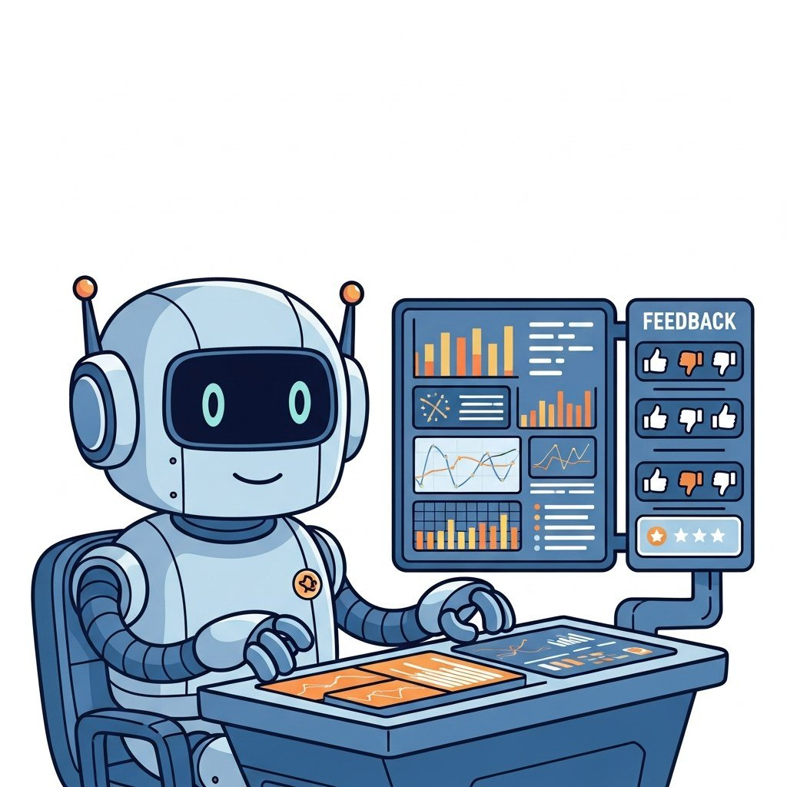

"Offline evals tell you it works; online observability tells you it is still working."
Deploy, Perpetually-Shipping AI Agent
Chapters 42 and 43 evaluated models in the lab. This chapter watches them in production: traces, dashboards, drift detection, online A/B tests, and the observability stack (LangSmith, Phoenix, Helicone, Langfuse) that keeps an LLM product healthy after launch.
Evaluation of production traffic: distributed tracing, observability platforms, OpenTelemetry, online A/B testing, drift detection, and eval-as-product workflows.
Chapter Overview
Online evaluation is the discipline of measuring an LLM system after it leaves the lab. This chapter covers the model registry and deployment workflows that bridge experimentation to production, the dashboards (W&B, MLflow) that track quality, safety, latency, and cost together, observability and the GenAI OpenTelemetry semantic conventions, the five flavors of LLM drift (input, model, context, performance, cost), the model-rotation strategy that keeps you portable across providers, and the eval-as-product category (Braintrust, Latitude, Laminar) that emerged between 2023 and 2026.
Online evaluation is where the 2025 silent-provider-update incidents taught the field that drift detection is non-optional. This chapter is the production-ready picture as of 2026.
- Architect a model registry with versioning, lineage, and promotion workflows for LLM artifacts.
- Configure quality, safety, latency, and cost dashboards in W&B or MLflow.
- Apply OpenLLMetry and the GenAI semantic conventions to instrument a production LLM system.
- Detect the five flavors of LLM drift (input, model, context, performance, cost) in production traffic.
- Design a model-rotation strategy that survives a provider deprecation or capability regression.
- Compare Braintrust, Latitude, and Laminar as eval-as-product platforms.
Prerequisites
- Offline evaluation from Chapter 42
- Specialized evaluation from Chapter 43
- Some prior exposure to production monitoring (Datadog, Prometheus) helps
Sections
- 44.2 LLM Evaluation Dashboards Quality, safety, latency, and cost dashboards in W&B and MLflow; prediction tables, drift detection, and unified observability for production LLMs. Entry
- 44.3 Observability, Monitoring, and Drift Detection The three pillars adapted for LLMs, OpenLLMetry and the GenAI semantic conventions, the five-tool landscape, and the three drift modes that hit production LLM systems. Intermediate
- 44.4 Post-Launch Monitoring and Iteration Eval-in-prod, drift detection, retraining cadence, user feedback loops, and model-rotation strategy for LLM products after launch. Intermediate
- 44.5 Drift Detection in Production The five flavors of LLM drift (input, model, context, performance, cost), how each one is detected, and the canonical 2024-2025 incidents that taught the field what silent provider updates look like. Advanced
- 44.6 Model-Rotation Strategy The portability discipline that keeps you from being held hostage by a single provider, the four ingredients of a workable strategy, and the 2025-2026 deprecations that made it non-optional. Advanced
- 44.7 Eval-as-Product: Braintrust, Latitude, Laminar Between 2023 and 2026, evaluation moved out of CI and into a new product category. Advanced
What's Next?
Next: Chapter 45: Tools of the Trade, Eval & Production Stack. Chapter 45 consolidates the eval-and-observability toolbox: OpenAI Evals, Inspect AI, Eleuther's lm-evaluation-harness, the eval-as-product platforms, OpenTelemetry instrumentation libraries, the open eval datasets (MMLU, BIG-Bench, HELM, HumanEval, GPQA), and the drift-detection rigs. Then Chapter 46 closes Part IX with the topic underneath all of it: how to use LLMs themselves as graders, and why doing it naively is a trap.